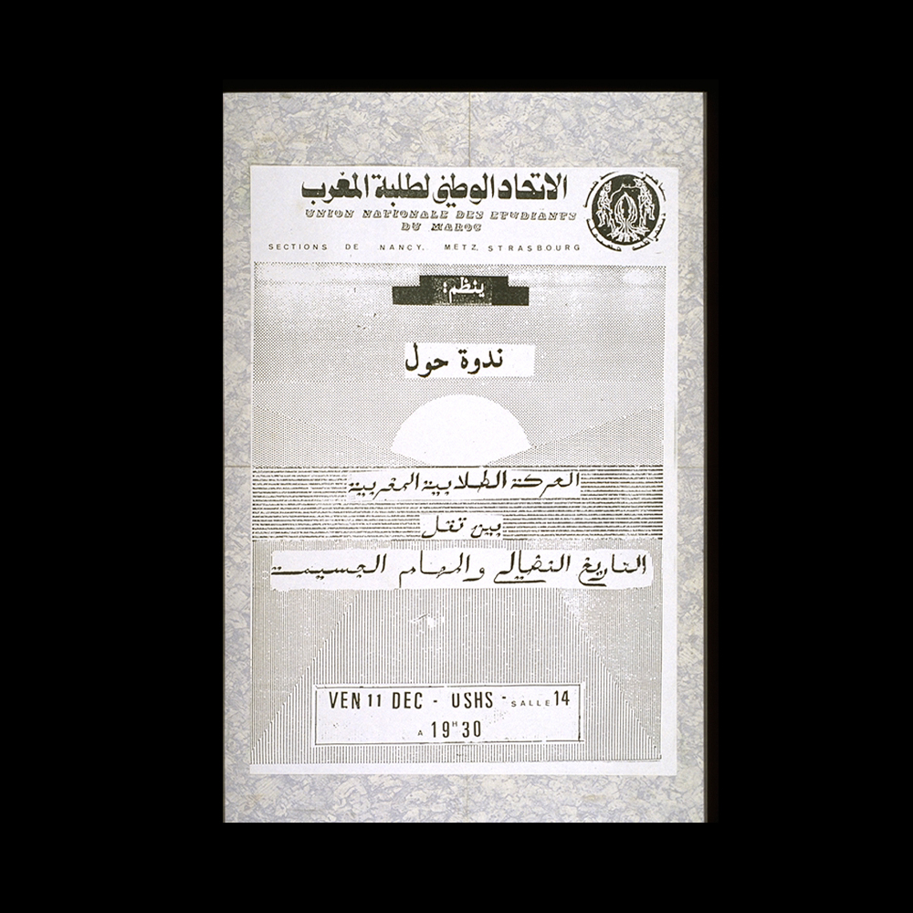
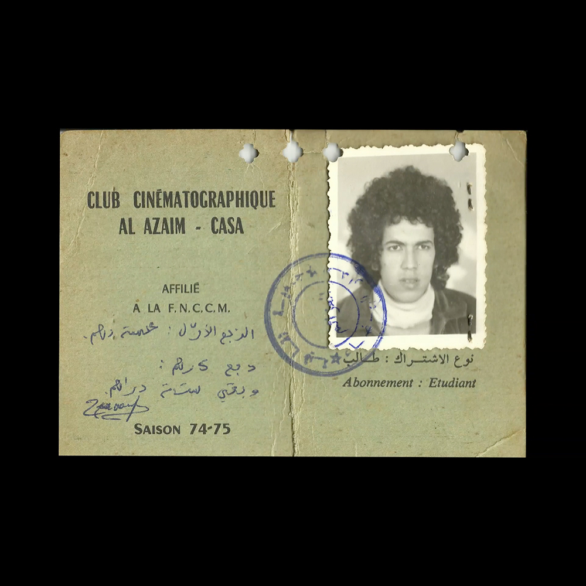
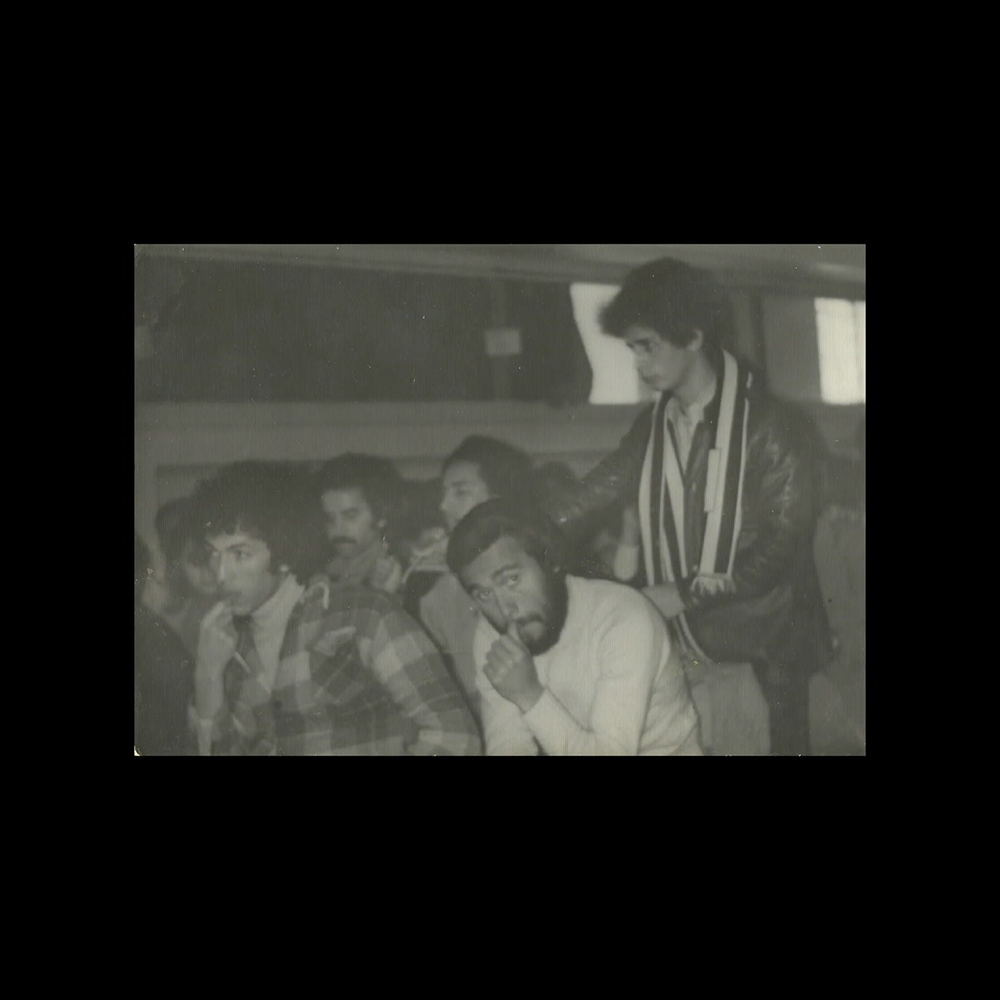
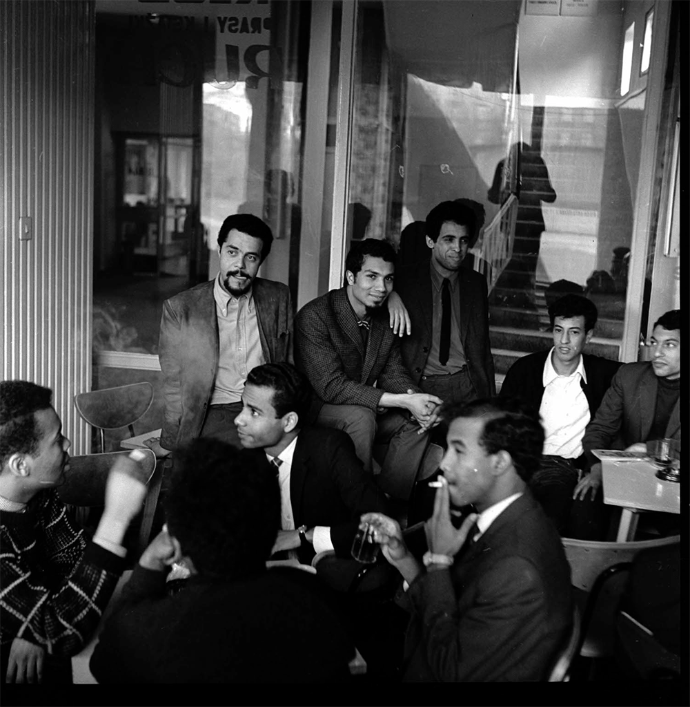

In the 1970s and 80s, Moroccan ciné-clubs⁽¹⁾ played a major role in film education. However, as they were closely linked to leftist opposition groups at the time, cine-clubs began to recede alongside these political organisations after the collapse of the Soviet Union.
Today, with the multiplicity of film festivals and the growth experienced by Moroccan cinema, these cinematographic institutions no longer have the same presence in the landscape of the 7th national art. Already their number, like that of cinemas (27 throughout the Kingdom), is decreasing more and more. The National Federation of Film Clubs has only around thirty, compared to around a hundred in its golden age with more than 40,000 members. And it was one of the most powerful in Africa.

A Paper Clipping Documenting the Address of the Union National des Etudiants du Maroc (UNEM), Morocco. Courtesy of the Palestinian Museum Digital Archive.

National Union of Students of Morocco, Nancy section, Metz, Strasbourg. Friday, December 11, USHS, Room 14 at 7:30 p.m. [Text in Arabic: UNEM organizes a conference on the Maghrebi student movement].
The phenomenon of cine-clubs had, for many years, mobilized a number of students with different backgrounds, across a number of regions of the country. At the time, the student bodies of universities also hosted Halaqiat⁽²⁾ within university campuses, at a time when the National Union of Moroccan Students (UNEM)⁽³⁾ was still flourishing.
Excerpt from an archival video published by INA from a film report in 1963 at the Moroccan pavillion in the university campus of Paris.
Indeed, during the 70s and 80s, liberation movements flourished and resonated in countries in the process of democratization. Morocco was hardly an exception to the rule, where people calling for democracy and progress loudly expressed these incessant needs. The film clubs, based on the productions of Eisenstein, Lelouch, Chabrol, Godard and many others who embodied the new wave⁽⁴⁾, provided the ideal pretext for discussing the proposed text, but also the overall context, taking into account the simulation⁽⁵⁾ effects which sometimes unconsciously infiltrated the debates. In this regard, people were much more concerned with the content of the films than with the cinematographic techniques.
Ciné-club Al Azaim was founded in 1973 by Saâd Chraïbi, Moroccan director and screenwriter born July 27, 1952 in Fez. From 1968 to 1970, Saâd Chraïbi studied medicine at the Faculty of Medicine in Casablanca. In the 1970s, he became a member of the National Federation of Film Clubs of Morocco, and in 1973 founded the film club “Al Azaim”, which he managed until 1983.


Archives Hassan Rachik, Ciné-club Al Azaim, Casablanca.
While pioneering filmmakers and film enthusiasts in Morocco are organizing ciné-clubs and trying to define cinema in the context of Morocco, Moroccan film students in Łódź⁽⁶⁾, Poland are part of the same conversation. There were seven Moroccans in the 1960s–70s in Łódź, most of them studying film directing: Mohamed Ben Soude arrived in 1961, Abdellah Drissi arrived in 1964, Mostafa Derkaoui and his brother Abdelkrim (studying cinematography) in 1965, Abdelkader Lagtaa in 1966, as well as Idriss Karim and Hamid Bensaïd.

Karim Idriss, Abdelkader Lagtaa and Aziz Sayed at the Łódź African Club, during a meeting in support of the Vietnamese people organised by the Polish branch of the Moroccan National Students’ Union, May 1967, Abdelkrim Derkaoui. Courtesy of CINIMA3.
KARIM:
We have not yet defined a national cinema. What we defined could be craft or something else. Cinema is, after all, an art and it is a question of knowing if we have something to contribute to our society. We cannot stop at the description, at the anecdotal. We have to show our people their culture, their sensitivity, their civilization.
ZEROUALI:
No task should be underestimated. You should not limit your horizons. We are an underdeveloped country. We must start at the beginning.
KARIM:
What is important is to translate the problems of the society in which we live. There are no recipes. We can bring something to the world. Personally I question certain civilizations and sometimes I spit on this foreign culture that is imposed on me daily. There are men in Africa who have something to say, more than Mr. Sartre. I want to say once again that audiovisual means are not cinema. These are only techniques at the service of education and we could multiply them, just as we can invent something more effective than cinema. The art of film, like technique in its highest sense, must serve man, his desires, his talent, and his development in general. Art that does not serve this purpose means nothing to me.
BOUANANI: